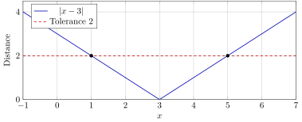
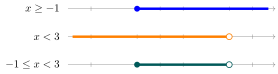
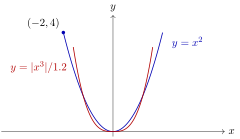
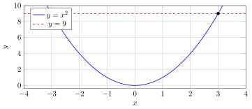
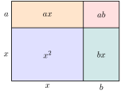
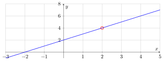
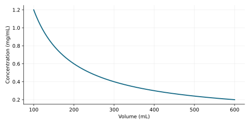

Real Numbers, Algebraic Expressions, and Mathematical Reasoning
Chapter overview. A mathematical model is only as trustworthy as its numbers, units, and algebra. In health sciences, a conversion error can change the meaning of a measurement by a factor of one thousand. This chapter builds a precise language for numbers and expressions, develops methods for simplifying and interpreting them, and introduces R and Python as tools for numerical exploration and verification.
Learning outcomes. By the end of the chapter, you should be able to: classify real numbers; use order and interval notation; interpret absolute value as distance; apply exponent and radical laws while respecting domains; simplify and factor expressions; manipulate rational expressions with restrictions; use scientific notation and significant figures responsibly; perform dimensional analysis; distinguish exact from approximate results; and verify calculations with R and Python.
Opening investigation: How much does a unit matter?
A laboratory report lists a mass of \(0.075\) grams. A second report lists \(75\) milligrams. Are these different measurements? Since \(1\,\mathrm{g}=1000\,\mathrm{mg}\), \(0.075\,\mathrm{g}\times(1000\,\mathrm{mg}/1\,\mathrm{g})=75\,\mathrm{mg}\). The numbers look different, but the quantities are equal. Throughout the chapter, always record the number and its unit.
Concept check 1. A measurement is \(0.0042\) meters. Express it in millimeters, and explain whether the numerical value becomes larger or smaller.
Real numbers and mathematical language
The natural numbers are \(1,2,3,\ldots\); the whole numbers also include \(0\); the integers include negative whole numbers. A rational number can be expressed as \(a/b\) with integers \(a,b\) and \(b\ne0\). Irrational numbers such as \(\sqrt2\) and \(\pi\) cannot be written as such ratios. Together the rational and irrational numbers form \(\mathbb R\).
Example 1: Classify numbers. Classify \(-7\), \(0\), \(3/8\), \(\sqrt{49}\), and \(\sqrt{5}\).
Worked solution. \(-7\) is an integer and rational; \(0\) is whole, integer, and rational; \(3/8\) is rational; \(\sqrt{49}=7\) is natural and rational; \(\sqrt5\) is irrational. Every number listed is real.
Order and intervals
For real \(a<b\), \((a,b)\) excludes endpoints while \([a,b]\) includes both. Mixed intervals \([a,b)\) and \((a,b]\) include exactly one endpoint. Infinite endpoints always use parentheses: \((-\infty,4]\). Union \(A\cup B\) joins sets; intersection \(A\cap B\) contains their common elements.
Example 2: Translate an inequality. Write \(-2\le x<5\) as an interval and describe the endpoints.
Worked solution. The interval is \([-2,5)\). The left endpoint \(-2\) belongs to the set; \(5\) does not.
Absolute value as distance
The absolute value \(|x|\) is the distance from \(x\) to \(0\) on the number line: \[|x|=\begin{cases}x,&x\ge0,\\-x,&x<0.\end{cases}\] More generally \(|x-a|\) is the distance between \(x\) and \(a\). Thus \(|x-3|\le2\) means \(1\le x\le5\), whereas \(|x-3|>2\) means \(x<1\) or \(x>5\).
Example 3: Measurement tolerance. A target temperature is \(37.0^\circ\mathrm C\) with tolerance \(0.4^\circ\mathrm C\). Express acceptable temperatures using absolute value and an interval.
Worked solution. \(|T-37.0|\le0.4\). Subtracting the tolerance from the target gives \(36.6\le T\le37.4\), or \([36.6,37.4]\) degrees Celsius.
Concept check 2. Why is \(\sqrt{x^2}=|x|\), not always \(x\)? Test \(x=-4\).
Algebraic expressions and the order of operations
An expression represents a value, whereas an equation asserts equality. A variable stands for a number in an allowed domain. Grouping symbols, powers, multiplication/division, and addition/subtraction govern the order of operations; multiplication and division at the same level are evaluated left to right.
Example 4: Grouping changes a result. Compare \(6+12/3^2\) and \((6+12)/3^2\).
Worked solution. Since \(3^2=9\), the first is \(6+12/9=22/3\). The second is \(18/9=2\).
Distributive property and combining like terms
For real \(a,b,c\), \(a(b+c)=ab+ac\). Only terms with the same variable part and exponent can be combined.
Example 5: Simplify with care. Simplify \(3(2x-5)-2(x+4)+7\).
Worked solution. Distribute: \(6x-15-2x-8+7\). Combine like terms: \(4x-16\).
Exponents and scientific notation
For nonzero \(a\) and integers \(m,n\), \(a^ma^n=a^{m+n}\), \(a^m/a^n=a^{m-n}\), \((a^m)^n=a^{mn}\), \(a^0=1\), and \(a^{-n}=1/a^n\). Fractional exponents require domain care: for \(a>0\), \(a^{m/n}=(\sqrt[n]{a})^m\). When \(n\) is even, real even roots require nonnegative radicands.
Example 6: Exponent rules. Simplify \(\dfrac{(2x^3)^2}{4x^{-1}}\) for \(x\ne0\).
Worked solution. The numerator is \(4x^6\). Dividing by \(4x^{-1}\) yields \(x^{6-(-1)}=x^7\). The original expression excludes \(x=0\).
Example 7: Negative base versus negative sign. Evaluate \((-3)^2\) and \(-3^2\).
Worked solution. \((-3)^2=9\), because the base is \(-3\). But \(-3^2=-(3^2)=-9\), because exponentiation precedes the leading minus sign.
Scientific notation
A nonzero number in scientific notation has the form \(a\times10^n\) with \(1\le|a|<10\) and integer \(n\). For example, \(0.000036=3.6\times10^{-5}\) and \(7{,}200{,}000=7.2\times10^6\). A number written with a decimal point does not automatically convey infinite measurement precision.
Example 8: Scale of a sample. A sample contains \(2.4\times10^6\) cells per milliliter. Estimate the number in \(0.015\) mL.
Worked solution. \((2.4\times10^6\,\mathrm{cells/mL})(0.015\,\mathrm{mL})=3.6\times10^4\) cells. The mL units cancel.
Radicals and rational exponents
For \(a\ge0\), \(\sqrt a\) denotes the nonnegative square root. Hence \(\sqrt{36}=6\), even though the equation \(x^2=36\) has two solutions \(x=\pm6\). For nonnegative \(a,b\), \(\sqrt{ab}=\sqrt a\sqrt b\); it is generally false that \(\sqrt{a+b}=\sqrt a+\sqrt b\).
Example 9: Simplifying radicals. Simplify \(\sqrt{72x^2}\) for real \(x\).
Worked solution. \(\sqrt{72x^2}=\sqrt{36\cdot2}\sqrt{x^2}=6|x|\sqrt2\). If \(x\ge0\) is known, this becomes \(6x\sqrt2\).
Example 10: Rationalize a denominator. Simplify \(\dfrac{3}{\sqrt5}\).
Worked solution. Multiply numerator and denominator by \(\sqrt5\): \(3\sqrt5/5\). This changes the form, not the value.
Concept check 3. Test the false identity \(\sqrt{9+16}=\sqrt9+\sqrt{16}\). What values do its two sides produce?
Factoring and rational expressions
Factoring reverses distribution. Useful identities include \[a^2-b^2=(a-b)(a+b),\qquad a^2+2ab+b^2=(a+b)^2.\] A rational expression is a quotient of polynomials; its denominator cannot be zero. Cancel factors, not arbitrary terms.
Example 11: Factor a trinomial. Factor \(x^2-5x+6\).
Worked solution. Find two numbers with product \(6\) and sum \(-5\): \(-2\) and \(-3\). Thus \(x^2-5x+6=(x-2)(x-3)\). Expanding checks the result.
Example 12: Simplify and retain restrictions. Simplify \(\dfrac{x^2-9}{x^2-3x}\).
Worked solution. Factor numerator and denominator: \(\dfrac{(x-3)(x+3)}{x(x-3)}\). For \(x\ne0,3\), cancel the common factor to obtain \((x+3)/x\). The original expression is undefined at both \(0\) and \(3\), even though the simplified formula alone is defined at \(3\).
Example 13: Add rational expressions. Simplify \(\dfrac{2}{x}+\dfrac{3}{x+1}\).
Worked solution. The common denominator is \(x(x+1)\). Therefore \(\dfrac{2(x+1)+3x}{x(x+1)}=\dfrac{5x+2}{x(x+1)}\), for \(x\ne0,-1\).
Dimensional analysis and quantitative reasoning
Units behave like algebraic factors. To convert \(2.5\) liters to milliliters, multiply by \(1000\,\mathrm{mL}/1\,\mathrm L\), obtaining \(2500\) mL. To convert a rate, convert both its numerator and denominator as needed. A physically meaningful formula must be dimensionally consistent: adding a time to a distance has no meaning.
Example 14: Infusion rate: arithmetic illustration only. A hypothetical nonclinical liquid transfer moves \(180\) mL in \(45\) minutes. Find the rate in mL/hour.
Worked solution. \(\dfrac{180\,\mathrm{mL}}{45\,\mathrm{min}}\cdot\dfrac{60\,\mathrm{min}}{1\,\mathrm{h}}=240\,\mathrm{mL/h}\). The minutes cancel. This is a units exercise, not a medical dosing recommendation.
Example 15: Concentration conversion. A laboratory solution has \(0.08\) g of solute in \(200\) mL. Express the concentration in mg/mL.
Worked solution. \(0.08\,\mathrm g=80\,\mathrm{mg}\). Dividing by \(200\,\mathrm{mL}\) gives \(0.4\,\mathrm{mg/mL}\).
Exact and approximate quantities
The identity \(1\,\mathrm m=100\,\mathrm{cm}\) is exact by definition; a measured length of \(1.23\) m is not exact. Computed answers should reflect measurement precision and the context. Avoid rounding intermediate results unnecessarily. Computers store many decimal quantities approximately, so equality tests on floating-point results need care.
Visual concept investigation: distance and tolerance
The plot below compares distance from a target with a horizontal tolerance level. The intersection points identify the boundary of an acceptable interval.

Computational laboratories: the same mathematics in R and Python
Both labs use the same numbers, definitions, and questions. No previous programming experience is assumed. Code outputs are numerical evidence, not mathematical proofs.
Laboratory A: numbers, powers, and floating-point arithmetic
Run the accompanying chapter01_lab.R or
chapter01_lab.py. Compare \((-3)^2\) with \(-3^2\), verify a scientific-notation
calculation, and inspect \(0.1+0.2\)
versus \(0.3\). Explain why a tiny
floating-point difference does not imply an algebraic error. Record the
original denominator restrictions when checking rational
expressions.
Laboratory B: intervals and absolute-value tolerance
Plot \(y=|x-3|\) together with \(y=2\) over \(-1\le x\le7\). Identify where \(|x-3|\le2\) and check \(x=1,3,5\). State why the graph supports but does not replace the exact solution \([1,5]\).
Laboratory C: unit conversion and a model
For the hypothetical sample mass \(0.075\) g, calculate milligrams. Then consider a simple linear mass model \(m(v)=0.4v\) mg, where \(v\) is volume in mL. Plot it for \(0\le v\le10\), label units on both axes, and explain the meaning of its slope. Do not infer clinical suitability from this illustrative relationship.
Applied case study: a laboratory concentration audit
A laboratory prepares a hypothetical solution containing \(0.12\) g of a substance in \(300\) mL. A technician records a concentration of \(0.4\) mg/mL. Is the entry internally consistent? Convert \(0.12\) g to \(120\) mg and divide by \(300\) mL to obtain \(0.4\) mg/mL. Next, if \(25\) mL is sampled, the model predicts \(10\) mg of substance. Explain the assumptions: the solution is uniformly mixed, the stated amounts are accurate, and no material is lost. This is a mathematical consistency check, not a validation of any medical preparation.
Common misconceptions and mathematical habits
A negative exponent means a reciprocal, not a negative value: \(2^{-3}=1/8\).
\(\sqrt{x^2}=|x|\) for real \(x\).
Cancellation applies to common multiplicative factors, not sums: \((x+2)/x\ne2\) in general.
An algebraically simplified expression may retain excluded inputs from its original form.
A computer-generated graph or decimal approximation does not establish an identity.
Numerical answers without units can be ambiguous in applied settings.
Deepening the foundations: mathematical statements and justification
Mathematics involves more than obtaining a numerical answer. A correct solution must identify the quantities involved, apply a valid property, and explain why the result answers the question. In this text we distinguish an example, which illustrates a rule, from a justification, which establishes that the rule applies to all allowed inputs. Testing a statement at several numbers may reveal a false claim, but it does not prove a universal claim.
Equality, identities, and conditional statements
An equality such as \(2x+3=11\) is true only for certain values of \(x\); solving gives \(x=4\). By contrast, \(2(x+3)=2x+6\) is an identity: it is true for every real \(x\). An expression such as \((x^2-1)/(x-1)\) agrees with \(x+1\) whenever \(x\ne1\), but the expressions do not have identical domains. Thus the precise statement is \[\frac{x^2-1}{x-1}=x+1\qquad\text{for }x\ne1.\] Domain restrictions are part of the mathematical claim, not optional footnotes.
Example 16: Is a proposed rule always true?. A student suggests that \((a+b)^2=a^2+b^2\). Determine whether this is an identity and derive the correct expansion.
Worked solution. Testing \(a=b=1\) gives \(4\) on the left and \(2\) on the right, so the proposed rule is false. Distribute carefully: \[(a+b)^2=(a+b)(a+b)=a^2+ab+ba+b^2=a^2+2ab+b^2.\] The cross term \(2ab\) cannot be omitted.
Guided practice 1. Decide whether each statement is always true, sometimes true, or never true over the real numbers: (a) \(x^2\ge0\); (b) \(x^2=x\); (c) \(\sqrt{x^2}=x\). Give an example or counterexample and explain your classification.
A reliable four-stage problem-solving routine
For a quantitative question, first interpret the requested quantity and its units. Second, represent the relationships using expressions, diagrams, or equations. Third, calculate using valid algebra and carefully tracked restrictions. Finally, check and interpret: substitute into the original condition, evaluate reasonableness, and state units. These stages will recur throughout the book and become particularly important in calculus modeling.
Example 17: Checking a laboratory conversion. A container holds \(0.0065\) liters. Express its volume in milliliters and check by reversing the conversion.
Worked solution. Because \(1\,\mathrm L=1000\,\mathrm{mL}\), we obtain \(0.0065\,\mathrm L\times1000\,\mathrm{mL/L}=6.5\,\mathrm{mL}\). Reversing gives \(6.5\,\mathrm{mL}\times(1\,\mathrm L/1000\,\mathrm{mL})=0.0065\,\mathrm L\). The cancellation of units confirms the direction of conversion.
Visual investigation I: the number line as a model of constraints
A number line is a one-dimensional coordinate system. It makes the difference between a single solution, a continuous interval, and two disconnected intervals visible. In an applied setting, an interval might represent acceptable measurement values, a range of plausible inputs, or a region in which a model is valid.

Example 18: Intersect two requirements. A quality-control measurement must be at least \(-1\) units and strictly below \(3\) units. Represent the requirements individually and jointly.
Worked solution. The conditions are \(x\ge-1\) and \(x<3\). Their intersection is \([-1,\infty)\cap(-\infty,3)=[-1,3)\). The left endpoint is included because equality is permitted; the right endpoint is excluded.
Guided practice 2. Sketch \(x>-2\) and \(x\le4\) on separate number lines. Shade their intersection. Then sketch their union. Explain why the union differs from the intersection.
Distance, midpoint, and radius
A useful way to describe an interval is through its center \(c\) and radius \(r\). For \(r>0\), the inequality \(|x-c|\le r\) is equivalent to \(c-r\le x\le c+r\). Conversely, an interval \([a,b]\) has midpoint \(c=(a+b)/2\) and half-width \(r=(b-a)/2\). This correspondence is useful when communicating tolerances.
Example 19: Recover a tolerance statement. Express the interval \([18.4,19.6]\) as an absolute-value inequality.
Worked solution. The midpoint is \((18.4+19.6)/2=19.0\) and the radius is \((19.6-18.4)/2=0.6\). Therefore the interval is exactly \(|x-19.0|\le0.6\).
Guided practice 3. A measured diameter is acceptable when \(|d-12.5|<0.2\). Write the corresponding open interval. What changes if the inequality is \(\le\) instead of \(<\)?
Visual investigation II: why order of operations matters
A mathematical expression has structure. Parentheses determine which operations form a single unit, and a negative sign is not automatically part of a base. The expression \(-2^4\) means \(-(2^4)=-16\), whereas \((-2)^4=16\). Likewise, \((-2)^3=-8\). The parity of the exponent matters when the base is negative.

From repeated multiplication to exponent laws
For positive integers \(m,n\), the product \(a^m a^n\) contains \(m+n\) factors of \(a\), giving \(a^{m+n}\). The quotient \(a^m/a^n\), for \(a\ne0\), removes \(n\) factors and leads to \(a^{m-n}\). To preserve this law when \(m=n\), we must have \(a^0=1\) for \(a\ne0\). When \(m<n\), negative exponents arise naturally: \(a^{-n}=1/a^n\). These are consequences of consistent definitions, not arbitrary memorized rules.
Example 20: Explain each simplification. Simplify \(\dfrac{(2x^{-2}y^3)^2}{4x^{-1}y}\) for \(x\ne0\), \(y\ne0\).
Worked solution. First square each factor in the numerator: \((2x^{-2}y^3)^2=4x^{-4}y^6\). Divide coefficients and subtract exponents: \(4x^{-4}y^6/(4x^{-1}y)=x^{-3}y^5=y^5/x^3\). The exclusions \(x\ne0\) and \(y\ne0\) come from the original expression.
Guided practice 4. Simplify \(\dfrac{(3a^2b^{-1})^2}{9ab^{-3}}\). State the original restrictions before simplifying, and verify the result by substituting \(a=2\), \(b=3\).
Powers of ten and estimation
Powers of ten provide a systematic way to compare scales. The ratio of \(3\times10^7\) to \(6\times10^4\) is \((3/6)\times10^3=500\). Thus the first quantity is five hundred times the second, not merely three orders of magnitude larger. When working with scientific notation, separate the coefficient calculation from the exponent calculation and then normalize the coefficient to the interval \([1,10)\).
Example 21: Estimate before computing. A fictional sample contains \(4.8\times10^5\) particles per mL. Estimate the count in \(0.025\) mL.
Worked solution. Compute \((4.8\times10^5)(2.5\times10^{-2})=12\times10^3=1.2\times10^4\) particles. As a reasonableness check, \(0.025\) mL is one-fortieth of a mL, and \(480{,}000/40=12{,}000\).
Visual investigation III: radicals, principal roots, and domains
The equation \(x^2=9\) has two solutions because both \(3\) and \(-3\) square to \(9\). However, the symbol \(\sqrt9\) denotes the principal (nonnegative) square root, namely \(3\). The distinction is important: the square-root function assigns one output to each allowed input, while solving a quadratic equation can produce two solutions.

Why \(\sqrt{x^2}=|x|\)
For \(x\ge0\), the nonnegative square root of \(x^2\) is \(x\). For \(x<0\), the nonnegative square root is \(-x\). Combining these cases gives \(\sqrt{x^2}=|x|\). In particular, replacing \(\sqrt{x^2}\) with \(x\) without knowing that \(x\ge0\) may change the value of an expression.
Example 22: Simplify with an unknown sign. Simplify \(\sqrt{50t^4}\) for real \(t\).
Worked solution. Factor the radicand: \(\sqrt{50t^4}=\sqrt{25\cdot2}\sqrt{(t^2)^2}=5|t^2|\sqrt2=5t^2\sqrt2\), because \(t^2\ge0\) for every real \(t\). Contrast this with \(\sqrt{50t^2}=5|t|\sqrt2\).
Guided practice 5. Simplify \(\sqrt{108x^2y^4}\) for arbitrary real \(x,y\). Explain which absolute-value bars can be removed and why.
Rational exponents and allowable inputs
For \(a\ge0\), \(a^{1/n}\) denotes the principal \(n\)th root when \(n\) is even. For odd \(n\), real roots also exist for negative inputs. The expression \(a^{m/n}\) can be interpreted as \((\sqrt[n]{a})^m\) whenever this root is defined and the exponent notation is unambiguous. For example, \(16^{3/4}=(\sqrt[4]{16})^3=2^3=8\). A real-valued square root \(\sqrt{x-5}\) requires \(x\ge5\). Domain restrictions should be identified before manipulating radicals.
Example 23: Determine a domain. Find the real domain of \(f(x)=\sqrt{2x+6}/(x-1)\).
Worked solution. The square root requires \(2x+6\ge0\), hence \(x\ge-3\). The denominator requires \(x\ne1\). The domain is \([-3,1)\cup(1,\infty)\). Both restrictions must hold simultaneously.
Visual investigation IV: factoring as geometric decomposition
Factoring is the reverse of expansion. The identity \((x+a)(x+b)=x^2+(a+b)x+ab\) can be visualized as the area of a rectangle partitioned into four smaller rectangles when the lengths are positive. This picture explains why the coefficient of \(x\) is the sum \(a+b\) and the constant term is the product \(ab\).

Example 24: Factoring by reasoning about sum and product. Factor \(x^2+7x+12\) and verify by multiplication.
Worked solution. We seek \(a,b\) with \(a+b=7\) and \(ab=12\). The pair \(3,4\) works, so \(x^2+7x+12=(x+3)(x+4)\). Expanding gives \(x^2+4x+3x+12=x^2+7x+12\).
Guided practice 6. Factor \(x^2-x-12\). Explain why the signs of the two factors differ, and check by expanding.
Recognizing patterns without guessing
Common-factor extraction should be considered first. For instance, \(6x^3-24x=6x(x^2-4)=6x(x-2)(x+2)\). Difference-of-squares factoring works because \((a-b)(a+b)=a^2-b^2\); it does not directly apply to \(a^2+b^2\) over the real numbers. Perfect-square trinomials follow from \((a\pm b)^2=a^2\pm2ab+b^2\). Recognizing a pattern is useful only when every term fits it.
Example 25: A multistep factorization. Factor \(2x^3+8x^2+8x\) completely.
Worked solution. First extract the greatest common factor: \(2x(x^2+4x+4)\). The trinomial is a perfect square, giving \(2x(x+2)^2\). Expanding verifies the answer.
Rational expressions and removable holes
Consider \(r(x)=(x^2-4)/(x-2)\). For \(x\ne2\), the expression equals \(x+2\). At \(x=2\), however, the original formula is undefined. Its graph is the line \(y=x+2\) with a hole at \((2,4)\). This distinction anticipates an essential calculus idea: a function can approach a value at a point even when it is not defined there.

Guided practice 7. Simplify \((x^2-25)/(x-5)\) and state its domain. Sketch the resulting line with the appropriate missing point. Explain why substituting \(x=5\) into the simplified expression is not a valid evaluation of the original expression.
Visual investigation V: units as algebraic objects
A measurement consists of a numerical value and a unit. Units can be multiplied, divided, and canceled, but only when the operation is meaningful. For example, a speed has units of distance divided by time; multiplying by a duration produces a distance. Adding \(5\,\mathrm{m}\) to \(3\,\mathrm{s}\) is undefined as a physical quantity because the units are incompatible.
Building a conversion chain
Suppose a nonclinical pump transfers \(2.4\) liters of water in \(3\) hours. To express the average rate in mL/min, write \[\frac{2.4\,\mathrm L}{3\,\mathrm h}\cdot\frac{1000\,\mathrm{mL}}{1\,\mathrm L}\cdot\frac{1\,\mathrm h}{60\,\mathrm{min}}=\frac{2400}{180}\,\mathrm{mL/min}\approx13.33\,\mathrm{mL/min}.\] The unit cancellations show that the result has the requested dimensions. A numerical calculator alone cannot detect a reversed conversion factor, but writing units makes such mistakes visible.
Example 26: Concentration and sample quantity. A fictional, uniformly mixed solution contains \(0.18\) g of a marker in \(450\) mL. Find the concentration in mg/mL and the marker mass in a \(30\) mL sample.
Worked solution. Convert \(0.18\) g to \(180\) mg. Then \(180/450=0.4\) mg/mL. A \(30\) mL sample contains \((0.4\,\mathrm{mg/mL})(30\,\mathrm{mL})=12\) mg. The result assumes uniform mixing; it is not a clinical dosing calculation.
Guided practice 8. A fictional container has \(0.075\) g of dissolved marker in \(250\) mL. Compute mg/mL and the amount in a \(40\) mL aliquot. Write each conversion factor explicitly.
Dimensional consistency and model checking
Suppose a model predicts mass from volume as \(m(v)=kv\). If \(m\) is in mg and \(v\) is in mL, then \(k\) must have units mg/mL. If a proposed formula instead adds \(v\) (mL) to \(k\) (mg/mL), the terms have incompatible dimensions. Dimensional consistency does not prove that a model is scientifically correct, but inconsistency reveals that something is wrong with its formulation.
Visual investigation VI: exact values and numerical approximation
A fraction such as \(1/3\) is an exact number. A computer may display it as \(0.3333333\), which is a finite approximation. Similarly, \(\sqrt2\) is exact notation for an irrational number, while \(1.4142\) is an approximation. R and Python typically use finite-precision floating-point numbers for decimal calculations. A result that is extremely close to zero may therefore appear as a tiny nonzero value.
Example 27: Approximation versus identity. Why might a program report that \(0.1+0.2\) is not exactly equal to \(0.3\)?
Worked solution. Many decimal fractions do not have finite binary floating-point representations. The stored approximations can differ slightly after arithmetic. This is a property of the representation, not a failure of the real-number identity \(0.1+0.2=0.3\). For numerical comparisons, use a suitable tolerance, such as \(|a-b|<10^{-10}\), when the scale and required precision justify it.
Guided practice 9. Calculate \(\sqrt2\) to four decimal places. Square the rounded value. Is the result exactly \(2\)? Explain why the difference is expected.
Percent change and relative error
Absolute error measures a difference in the original units, while relative error compares the difference to a reference value. If an observed mass is \(9.8\) g and a reference is \(10.0\) g, the absolute error is \(|9.8-10.0|=0.2\) g and the relative error is \(0.2/10.0=0.02\), or \(2\%\). The reference value must be nonzero to define relative error. Percent change uses a signed difference divided by the original value; percent error often uses an absolute difference. State which quantity you are computing.
Example 28: Interpreting measurement variation. A sensor reads \(51.5\) units when the reference is \(50.0\) units. Find the signed difference and absolute relative error.
Worked solution. The signed difference is \(51.5-50.0=1.5\) units. The absolute relative error is \(|1.5|/50.0=0.03=3\%\). The reading is \(3\%\) above the reference.
Extended computational investigation: predict, run, explain
The accompanying R and Python laboratory files provide complete, runnable versions of the investigations below. Each investigation presents the R code first, followed by the corresponding Python code, in full-width listings as in the companion calculus volumes. Before running a command, write down the expected mathematical result. Then run the calculation and explain any discrepancy. This routine prevents software from becoming a substitute for mathematical reasoning.
Investigation A: test an identity numerically
For several values of \(x\), compare \((x+2)^2\) with \(x^2+4x+4\). Then compare \((x+2)^2\) with \(x^2+4\). One matching input is not a proof; a single mismatch disproves a proposed identity.
R
x <- c(-3, -1, 0, 2, 5)
lhs <- (x + 2)^2
correct <- x^2 + 4*x + 4
incorrect <- x^2 + 4
print(data.frame(x, lhs, correct,
incorrect))Python
x_values = [-3, -1, 0, 2, 5]
for x in x_values:
lhs = (x + 2)**2
correct = x**2 + 4*x + 4
incorrect = x**2 + 4
print(x, lhs, correct, incorrect)Interpretation questions. Which formula agrees with the left side at every tested input? Find an input where the incorrect formula happens to agree. Why would that agreement not establish an identity?
Investigation B: numerical tolerance as a visual region
For a target value \(c=3\) and tolerance \(r=2\), evaluate \(|x-c|\) on a grid and compare it with \(r\). The accepted region is \([1,5]\). Use a graph to support the result, then justify the endpoints algebraically. Modify \(c\) and \(r\) to explore how the accepted interval shifts and changes width.
R
x <- seq(-1, 7, length.out=401)
distance <- abs(x - 3)
plot(x, distance, type="l", lwd=2,
xlab="x", ylab="Distance")
abline(h=2, col="red", lty=2)
print(range(x[distance <= 2]))Python
import numpy as np
import matplotlib.pyplot as plt
x = np.linspace(-1, 7, 401)
distance = np.abs(x - 3)
plt.plot(x, distance)
plt.axhline(2, color="red", ls="--")
plt.xlabel("x")
plt.ylabel("Distance")
plt.show()
print(x[distance <= 2].min(),
x[distance <= 2].max())Interpretation questions. Why do the grid-based endpoints depend on sampling resolution? How can exact algebra avoid this issue? What happens if the tolerance is zero?
Investigation C: verify a unit-based model
Assume a fictional, uniformly mixed marker solution has concentration \(0.4\) mg/mL. Let \(m(v)=0.4v\) for \(0\le v\le10\). Make a table of \(v=0,2,4,6,8,10\) and corresponding masses. Plot the points and connect them. Interpret the slope as \(0.4\) mg for each additional mL. Explain why a straight line is appropriate only under the assumed constant concentration.
R
v <- seq(0, 10, by=2)
m <- 0.4*v
print(data.frame(volume_mL=v,
mass_mg=m))
plot(v, m, type="b", pch=19,
xlab="Volume (mL)",
ylab="Marker mass (mg)")Python
import matplotlib.pyplot as plt
v = list(range(0, 11, 2))
m = [0.4*t for t in v]
print(list(zip(v, m)))
plt.plot(v, m, marker="o")
plt.xlabel("Volume (mL)")
plt.ylabel("Marker mass (mg)")
plt.show()Interpretation questions. What is \(m(0)\) and why? How much does mass change when volume increases from \(4\) to \(7\) mL? Why must the units of the slope be mg/mL?
Guided practice workshop: from explanation to independence
The following activities are designed for collaborative work or individual study. For each problem, write the principle used before the arithmetic. Compare methods with a partner, and explain whether a computational check would add useful evidence.
Workshop 1: interval reasoning
A manufacturing measurement is acceptable when it is within \(0.15\) mm of a target of \(8.00\) mm. (a) Write an absolute-value inequality. (b) Write the interval. (c) Sketch the interval and label both endpoints. (d) Explain whether \(7.85\) mm and \(8.16\) mm qualify. (e) If the allowed tolerance is halved, determine the new interval.
Workshop 2: exponent reasoning
A fictional sample has \(3.2\times10^6\) cells per mL. (a) Estimate the count in \(0.005\) mL. (b) Express the result in scientific notation. (c) Explain the exponent arithmetic. (d) Check using R or Python and compare with a mental estimate.
Workshop 3: rational-expression reasoning
Consider \(q(x)=(x^2-6x+8)/(x-2)\). (a) Factor the numerator. (b) Simplify wherever allowed. (c) Identify the excluded input. (d) Evaluate \(q(3)\) using both formulas. (e) Explain why \(q(2)\) is undefined even though the simplified expression has a value at \(2\).
Workshop 4: dimensional reasoning
A fictional laboratory mixture contains \(0.24\) g of a marker in \(600\) mL. (a) Convert grams to milligrams. (b) Find the concentration in mg/mL. (c) Find the marker mass in \(75\) mL. (d) State the assumption that makes the proportional model appropriate. (e) Identify which quantities are measured and which conversions are exact.
Workshop 5: calculus readiness
For \(h\ne0\), simplify \(\big((3+h)^2-9\big)/h\). (a) Expand the numerator. (b) Factor out \(h\). (c) Cancel only after stating the restriction. (d) Evaluate the simplified expression at \(h=0.1\), \(0.01\), and \(0.001\). (e) Explain what value the results approach and why the original expression cannot be evaluated at \(h=0\).
Self-assessment: explain the mathematics
Before proceeding to the chapter summary, check whether you can do more than reproduce a formula. Can you explain why negative exponents represent reciprocals? Can you derive a tolerance interval from a center and half-width? Can you distinguish a square-root symbol from the solutions of a squared equation? Can you simplify a rational expression while preserving excluded inputs? Can you use units to decide whether a model is meaningful? Can you identify when a numerical check is evidence rather than proof? If any answer is uncertain, revisit the relevant investigation and complete its guided practice without consulting the worked example.
Additional worked applications and error analysis
Example 29: A complete tolerance analysis. A fictional instrument is calibrated to \(25.0\) units with a maximum allowed deviation of \(0.75\) units. Determine the acceptance region and assess readings of \(24.20\), \(25.70\), and \(25.80\) units.
Worked solution. Let \(x\) be the reading. The deviation is \(|x-25.0|\), so acceptance requires \(|x-25.0|\le0.75\). Subtracting and adding \(0.75\) gives \(24.25\le x\le25.75\). The reading \(24.20\) is too low, \(25.70\) is acceptable, and \(25.80\) is too high. The endpoints are accepted because the condition is non-strict.
Example 30: Error detection in a rational expression. A student writes \(\dfrac{x^2+5x}{x}=x+5\) for every real \(x\). Evaluate the student’s reasoning.
Worked solution. Factoring gives \(x(x+5)/x\). Canceling \(x\) is valid only when \(x\ne0\). The simplified formula \(x+5\) agrees with the original for all nonzero inputs, but the original is undefined at \(x=0\). The student’s algebra is correct on the restricted domain; the phrase “for every real \(x\)” is not.
Example 31: An application involving a rectangular region. A rectangular laboratory work surface has length \(x+4\) cm and width \(x+2\) cm, where \(x>0\). Write and expand its area, then find the area when \(x=6\).
Worked solution. The area is \(A(x)=(x+4)(x+2)=x^2+6x+8\) square centimeters. At \(x=6\), \(A(6)=36+36+8=80\,\mathrm{cm}^2\). Checking geometrically, the sides are \(10\) cm and \(8\) cm, and their product is \(80\,\mathrm{cm}^2\). The two methods agree.
Example 32: Comparing absolute and relative differences. Two fictional devices measure the same reference quantity of \(200\) units. Device A reads \(196\) and device B reads \(207\). Which has the smaller absolute error and relative error?
Worked solution. Device A has absolute error \(|196-200|=4\) units and relative error \(4/200=2\%\). Device B has absolute error \(|207-200|=7\) units and relative error \(7/200=3.5\%\). Device A has the smaller error by both measures. These comparisons do not by themselves establish which device is more reliable across repeated measurements.
Try it without looking back
Write the acceptance interval for a target of \(42\) with tolerance \(1.5\), then test readings \(40.4\) and \(43.5\).
Simplify \(\dfrac{3x^2-12x}{3x}\) and retain the domain of the original expression.
A rectangle has sides \(x+1\) and \(x+7\). Expand its area and evaluate at \(x=2\).
A measurement of \(81\) is compared with reference \(80\). Find the signed difference and absolute relative error.
Reflection. For each solution, identify one mathematical check that would catch an error: substitution, reversing a conversion, expanding a factorization, checking an endpoint, or examining units. Explain which check is most informative and why.
Chapter summary and calculus connection
The real number system, inequalities, exponents, radicals, factoring, rational expressions, and units form the working language of precalculus. In calculus, difference quotients often require factoring and canceling a factor while carefully preserving domain restrictions. For example, for \(h\ne0\), \[\frac{(x+h)^2-x^2}{h}=\frac{2xh+h^2}{h}=2x+h.\] The restriction \(h\ne0\) is essential during simplification; a later calculus course will study what happens as \(h\) approaches zero.
Chapter exercises
Show intermediate steps, state restrictions, and include units when appropriate. For computational questions, explain the output in words.
Number systems and intervals
Classify \(-12\), \(0\), \(5/6\), \(\sqrt{81}\), and \(\pi\) as natural, whole, integer, rational, or irrational where applicable.
Write \(-4<x\le2\) in interval notation and sketch it.
Write \((-\infty,-1)\cup[3,\infty)\) as an inequality using “or.
Find \([-3,4)\cap(1,7]\).
Express all real numbers within \(0.6\) of \(8\) as an absolute-value inequality and interval.
Solve \(|x+2|<5\) and express the answer in interval notation.
Expressions and powers
Evaluate \(5+18/3^2\) exactly.
Simplify \(4(3x-2)-5(x+1)\).
Simplify \((3a^2b^{-1})^2/(9a^{-1})\) and state restrictions.
Explain the difference between \((-4)^2\) and \(-4^2\).
Write \(0.00000082\) in scientific notation.
Compute \((6\times10^5)(2\times10^{-3})\) in scientific notation.
Radicals and factoring
Simplify \(\sqrt{98x^2}\) for real \(x\).
Simplify \(\sqrt{48}+2\sqrt{3}\).
Rationalize \(5/\sqrt{7}\).
Factor \(x^2-7x+12\).
Factor \(9y^2-25\).
Explain why \(\sqrt{a+b}=\sqrt a+\sqrt b\) is not a general identity.
Rational expressions
Simplify \((x^2-16)/(x^2+4x)\) and state all exclusions.
Add \(1/x+2/(x-3)\) and state restrictions.
Simplify \((x^2-1)/(x-1)\), noting the original domain.
Identify the error in canceling the \(x\) terms of \((x+4)/x\) to obtain \(4\).
Measurement and modeling
Convert \(0.035\) g to mg.
Convert \(1.8\) L to mL.
A nonclinical liquid transfer moves \(150\) mL in \(30\) minutes. Express its rate in mL/h.
A sample has \(0.09\) g of solute in \(150\) mL. Find mg/mL.
A measurement is \(12.0\pm0.3\) cm. Give its allowable interval and absolute-value inequality.
Explain the distinction between exact conversion factors and measured quantities.
Computational and challenge
Run both scripts and compare \(0.1+0.2\) to \(0.3\). Explain the observation.
Modify both plotting scripts to display \(|x-4|\) and the threshold \(1.5\). Find the interval algebraically.
Explain why \((x^2-9)/(x-3)\) and \(x+3\) are not the same function on all real numbers.
Simplify \(((x+h)^2-x^2)/h\) for \(h\ne0\) and explain why \(h=0\) is excluded.
Calculus readiness checkpoint
Factor \(x^2-4\) and simplify \((x^2-4)/(x-2)\) with the correct restriction.
For \(h\ne0\), simplify \(((3+h)^2-9)/h\).
Interpret \(|x-5|<0.2\) as a distance statement and an interval.
Explain why units matter when interpreting the slope of a graph.
Looking ahead. Chapter 2 will use these skills to solve equations and inequalities, identify extraneous solutions, and construct algebraic models.
Extended application: Laboratory dilution audit
A teaching laboratory mixes 120 mg of dye into a variable volume of water. Assume complete mixing and negligible volume change from the dye. The quantities in this investigation are illustrative rather than measured observations.
Formulating the mathematical model
The proposed relationship is \[C(v)=120/v.\] Before calculating, identify the input and output, their units, and the interval on which the model is being studied. Distinguish the mathematical domain from the practical domain. The numerical study uses inputs from \(100\) to \(600\).
Example 33: Analytical investigation. Derive the volume required for a concentration of \(0.4\) mg/mL. Convert the original mass to grams and explain why volume must be positive.
Worked solution. \(120/0.4=300\) mL; \(120\) mg is \(0.12\) g. Zero volume makes the quotient undefined.
Connecting numerical and graphical representations
| Volume (mL) | Concentration (mg/mL) |
|---|---|
| 100 | 1.2 |
| 225 | 0.5333 |
| 350 | 0.3429 |
| 475 | 0.2526 |
| 600 | 0.2 |

Interpretation. Compare the tabulated values with the graph. Identify the intervals over which the output increases or decreases, and distinguish a sampled extremum from an exact analytical extremum. Explain whether interpolation and extrapolation have the same justification in this setting.
R implementation
The following standalone script defines the model, generates predictions, and draws a labeled graph. Read the formula before running the code. The sampled range is a numerical diagnostic, not a proof of the exact range.
# Applied investigation: Laboratory dilution audit
# 1. Define the input domain and model
x <- seq(100, 600, length.out = 301)
y <- 120/x
# 2. Inspect numerical predictions
idx <- unique(round(seq(1, length(x), length.out = 5)))
print(data.frame(input = x[idx], output = y[idx]))
# 3. Visualize the model with labeled axes
plot(x, y, type = "l", lwd = 2, col = "#176B87",
xlab = "Volume (mL)", ylab = "Concentration (mg/mL)")
grid()
# 4. Check the sampled output range
print(range(y))Python implementation
Repeat the same investigation using NumPy arrays and Matplotlib. Compare the printed predictions with the R output, allowing for rounding.
# Applied investigation: Laboratory dilution audit
import numpy as np
import matplotlib.pyplot as plt
# 1. Define the input domain and model
x = np.linspace(100, 600, 301)
y = 120/x
# 2. Inspect numerical predictions
idx = np.unique(np.linspace(0, len(x)-1, 5).round().astype(int))
print(np.column_stack((x[idx], y[idx])))
# 3. Visualize the model with labeled axes
fig, ax = plt.subplots(figsize=(7, 3.6))
ax.plot(x, y, "-", color="#176B87", linewidth=2)
ax.set(xlabel="Volume (mL)", ylabel="Concentration (mg/mL)")
ax.grid(alpha=0.22)
ax.spines[["top", "right"]].set_visible(False)
fig.tight_layout()
plt.show()
# 4. Check the sampled output range
print(np.min(y), np.max(y))Guided practice: checking the model
Calculate the outputs at the two endpoints by hand. Compare them with the numerical table.
Select an interior input not listed in the table. Predict the output before evaluating it in either language.
Explain the meaning of the difference between the two endpoint outputs, including units. If appropriate, calculate the average rate of change.
Identify a physical assumption of the model and describe a circumstance in which it would fail.
Chapter project: investigating Laboratory dilution audit
Prepare a short technical report for a reader who has not studied the model. Use the preceding case as a starting point, but develop your own investigation rather than merely reproducing the worked example.
State a quantitative question that can be answered using the model. Define all variables, units, and restrictions.
Modify one meaningful numerical parameter in the formula. Explain what the change represents in the original context. Derive the revised formula and predict the direction of change before computing.
Compare the original and revised models at five common admissible inputs. Present a labeled table and explain the largest difference in the table.
Produce a graph containing both models on the same axes. Use a legend and distinguish the curves with line styles or markers. Explain the shape and any intersections.
Solve your quantitative question algebraically where possible. Verify the result using R and Python; report any differences due to numerical precision.
Discuss at least two limitations. Describe what measurements would be needed to assess the model in practice. Do not present simulated predictions as empirical evidence.
Project deliverables and assessment
Submit a two- to three-page report, the two runnable scripts, and the labeled figure. The report should stand on its own without requiring the reader to inspect the code.
| Criterion | Points |
|---|---|
| Mathematical formulation and domain | 20 |
| Analytical reasoning and verification | 25 |
| Reproducible R and Python computations | 20 |
| Graph and table quality | 15 |
| Interpretation and limitations | 20 |
| Total | 100 |
Companion scripts
Interactive investigation: Absolute value and distance
Enable JavaScript to explore the model.
Explore and explain: Where is the minimum? Solve |x − a| = 2.